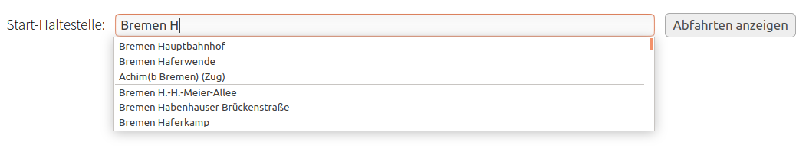
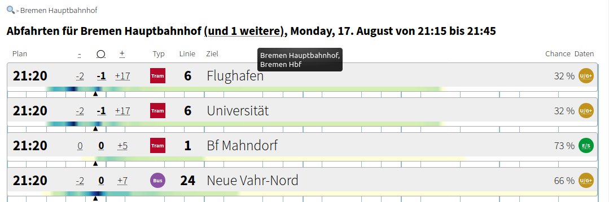
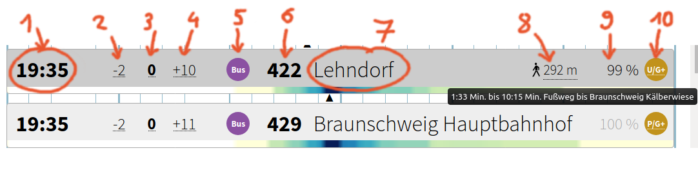
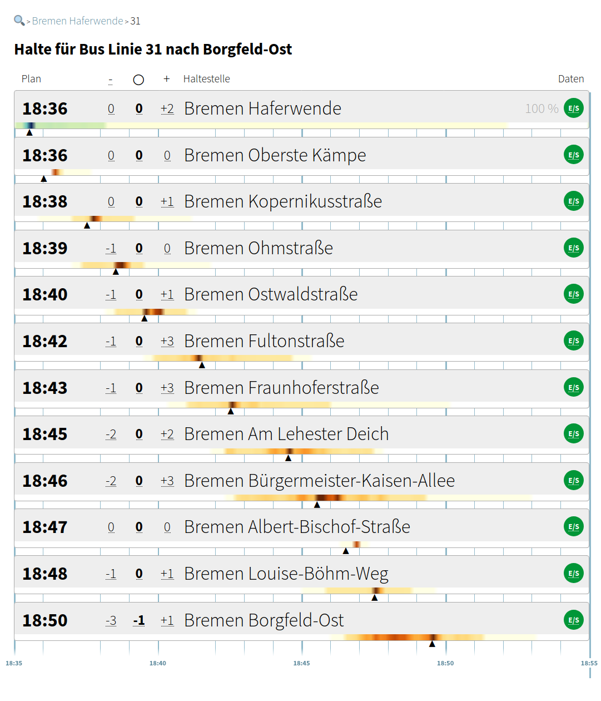
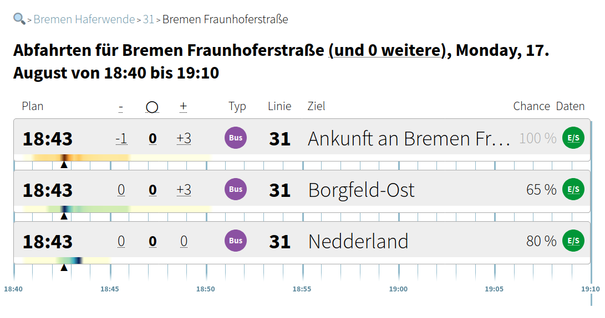
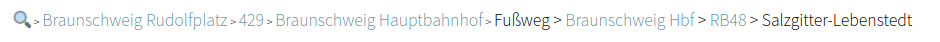
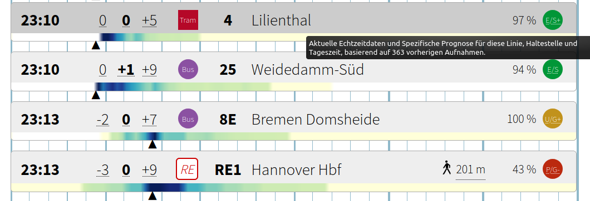

Erweiterter Abfahrtsmonitor - Anleitung
- Was ist der erweiterte Abfahrtsmonitor?
- So geht’s
- An der ersten Haltestelle
- Einsteigen und Weiterfahren
- Umsteigen
- Reisekette
- Datenqualität
- Disclaimer
- Mehr Info und Hintergrundwissen
Was ist der erweiterte Abfahrtsmonitor?
Die meisten Abfahrtsmonitore zeigen immer nur genau eine Zeit pro Fahrzeug an. Manchmal sind das einfach die Zeiten aus dem Fahrplan, manchmal ist es eine Echtzeit-basierte Prognose vom Verkehrsanbieter, der z.B. die aktuelle Position des Fahrzeugs kennt. Meistens weiß man gar nicht so genau, worauf diese Zeit im Einzelfall basiert und wie zuverlässig sie ist.
Wer eine bestimmte Linie gut kennt, hat vielleicht eine Intuition dafür, wie weit die Abfahrtszeiten in Wirklichkeit verteilt sind. Das kann sich allerdings kein Mensch für alle Fahrzeuge merken – aber für einen Computer ist das eigentlich einfach. Leider haben wir bisher trotzdem noch kein Abfahrtsdisplay gesehen, wo aus diesen Informationen mehr gemacht wird, als nur eine einfache Uhrzeit, vielleicht noch mit einer zusätzlichen Verspätungsangabe in Minuten.
Deshalb haben wir den erweiterten Abfahrtsmonitor entwickelt. Hier kannst du die Wahrscheinlichkeitsverteilung, wann dein Bus abfahren wird, als grafische Visualisierung sehen. Weil wir davon überzeugt sind, dass diese Information dir ein umfassenderes Bild davon vermitteln kann, wie sicher dein Ein-/Umstieg in Wirklichkeit ist.
Außerdem kannst du nicht nur die Abfahrten an einer Haltestelle sehen, sondern auch ausprobieren, wie deine Fahrt weitergeht, und deine Reisekette mit Umstiegen selbst zusammenstellen. Natürlich auch inklusive grafisch dargestellter Wahrscheinlichkeitsverteilung der Ankunfts- und Abfahrtszeiten.
Und weil das auch manchmal nicht übersichtlich genug ist, kannst du bei uns auch den Prozentwert sehen, mit welcher Chance du alle Anschlüsse auf deiner Reise bekommen wirst.
So geht’s
Auf der Startseite kannst du die Haltestelle auswählen, von der deine Reise starten soll. Aktuell stehen alle Haltestellen im Gebiet des Verkehrsverbundes Bremen/Niedersachsen (VBN) zur Auswahl.
An der ersten Haltestelle
Mit einem Klick auf “Abfahrten anzeigen” gelangst du zur Übersicht aller Verkehrsmittel, die in der nächsten halben Stunde von der gewählten Haltestelle abfahren und mit mindestens 5% Wahrscheinlichkeit noch erreichbar sind.
In der Überschrift siehst du außerdem eine Angabe, von wievielen weiteren Haltestellen in der Nähe die Abfahrten ebenfalls angezeigt werden. Wenn du die Maus über die Schrift “(und … weitere)” bewegst, werden die Namen dieser Haltestellen als Tooltip eingeblendet.

Mit dem Lupen-Symbol oben links (hier und auf allen weiteren Seiten) kommst du jederzeit wieder zurück zur Haltestellen-Auswahl.
Für jede Fahrt werden folgende Infos in einer Zeile angezeigt:

- Abfahrtszeit laut Fahrplan
- Früheste Abfahrtszeit, die in 99% der Fälle nicht unterschritten wird (in Minuten Abweichung vom Fahrplan, genaue Uhrzeit als Tooltip)
- Mittlere Abfahrtszeit.
- Späteste Abfahrtszeit, die in 99% der Fälle nicht überschritten wird.
- Verkehrsmittel-Typ
- Liniennummer
- Richtung / Ziel
- Bei Abfahrt von einer Haltestelle in der Nähe: Fußweg-Symbol und Entfernung (mit Fußwegdauer und Haltestellenname als Tooltip).
- Wahrscheinlichkeit in Prozent, dass dieser Umstieg erreicht wird
- Kürzel für die Qualität der Datenmenge, auf der diese Vorhersage basiert (siehe unten)
Unterhalb der Zeile ist die Wahrscheinlichkeitsverteilung der Abfahrtszeit durch einen farbigen Balken in blau/grün/gelb dargestellt.

So ist der Balken zu lesen:
- Je dunkler die Farbe, desto höher die Chance, dass das Fahrzeug tatsächlich zu diesem Zeitpunkt abfährt.
- Die Abfahrtszeit laut Fahrplan ist durch ein Dreieck unterhalb des Balkens markiert.
- Die wahrscheinlichste Abfahrtszeit gemäß unserer Prognose ist durch einen Kreis oberhalb des Balkens markiert. (Genau genommen handelt es sich um den Median aller möglichen Abfahrtszeiten, d.h. dass die Abfahrt vor oder nach diesem Zeitpunkt stattfindet, ist genau so wahrscheinlich.)
- Die frühesten und spätesten Abfahrtszeiten, die in 99% der Fälle nicht unter-/ überschritten werden, sind durch eckige Klammern auf dem Balken eingerahmt.
- Außerhalb der eckigen Klammern haben manche Balken noch einen hell-gelben Bereich. Er stellt den Bereich der extrem unwahrscheinlichen Verspätungen / Verfrühungen dar, die seltener als in 1% aller Fälle auftreten. Ihn kannst du eigentlich ignorieren, da diese Daten oft auf Messfehlern bei den Verkehrsbetrieben basieren - daher haben wir auch so einen hellen, kaum sichtbaren Farbton gewählt.
Einsteigen und Weiterfahren
Durch Klick auf eine Abfahrts-Zeile kommst du auf die nächste Seite. Dort werden alle weiteren Halte der gewählten Fahrt angezeigt - ebenfalls mit Zeitangaben und farbigen Balken (in braun/orange/gelb) zur Darstellung der Ankunftszeit-Verteilung.
Eine Wahrscheinlichkeit wird hier nur in der obersten Zeile angezeigt. Denn wenn du den Bus erstmal erwischt hast, gehen wir davon aus, dass du genauso wahrscheinlich auch später aus diesem Bus wieder aussteigen kannst (Die Fälle, in denen sich der Bus unterwegs in Luft auflöst, sind so selten, dass sie bei unseren Datenmengen nicht ins Gewicht fallen…).

Klicke dann auf die Haltestelle, an der du umsteigen möchtest.
Umsteigen
Du gelangst dann auf eine ähnliche Seite wie die vorherige, wo die weiteren Abfahrten an dieser Haltestelle aufgelistet sind. Für die Berechnung der Wahrscheinlichkeit, dass du den Anschluss bekommst, wird jetzt berücksichtigt, wann du wahrscheinlich mit dem Fahrzeug ankommst, was in der obersten Zeile angezeigt wird.

Reisekette
So kannst du dir deine ganze Reisekette zusammenstellen, und sehen, wie wahrscheinlich du alle Umstiege erreichst. Je nach Vorliebe kannst du dich damit schon vor der Fahrt entscheiden, ob du lieber eine Route nimmst, die nicht unbedingt klappt, aber wenn, dann eben schneller am Ziel ist – oder lieber eine sichere Route, die dafür etwas längere Umsteigezeiten enthält. Und natürlich alles dazwischen.
In beiden folgenden Beispielen beginnt die Reise um 19:00 an der Haltestelle Braunschweig Rudolfplatz.
Mit der schnelleren Verbindung kommst du evtl. schon um 19:42 in Salzgitter-Lebenstedt an - aber die Ein- und Umstiege sind insgesamt nur mit 5% Chance überhaupt schaffbar.
Mit der langsameren Verbindung bist du zwar erst um 20:10 in Salzgitter-Lebenstedt, aber dafür sind die Umsteigezeiten lang genug, dass diese Verbindung zu 100% klappt.
{kind=link}
{kind=link}
In der Navigationszeile oben links kannst du jederzeit zu früheren Teilen der Reise zurückspringen, um andere Varianten auszuprobieren.

Datenqualität
Um die Wahrscheinlichkeits-Verteilung von Abfahrt und Ankunft auszurechnen, haben wir Echtzeitdaten aus der Vergangenheit gesammelt und darüber Statistiken erstellt. Echtzeitdaten sind aber nicht für alle Linien verfügbar, daher kann die Qualität der Prognose im Einzelfall sehr unterschiedlich sein.
An den Kürzeln ganz rechts in jeder Zeile kannst du sehen, was die Grundlage für die dort angezeigte Verteilung ist.

Die Kürzel bestehen aus zwei Teilen. Der erste Buchstabe gibt an, ob wir aktuelle Echtzeitdaten für diese Fahrt haben und sie zur Berechnung der Verteilung mit einbeziehen:
| E | Aktuelle Echtzeitdaten werden genutzt. |
| U | Wir haben zwar aktuelle Echtzeitdaten, aber noch nicht genug historische Aufzeichnungen zu dieser Linienvariante, um sie damit zu verknüpfen - deswegen werden die Echtzeitdaten hier noch nicht genutzt. |
| P | Für diese Fahrt haben wir keine aktuellen Echtzeitdaten. |
Der Zweite Teil des Kürzels gibt an, wie genau die Statistische Auswertung auf diese Fahrt und Haltestelle zugeschnitten ist:
| S+ | Statistik für diese Wochen-/Tageszeit, diese Linienvariante und diese Haltestelle, verknüpft mit aktuellen Echtzeitdaten |
| S | Statistik für diese Linienvariante und diese Haltestelle, verknüpft mit aktuellen Echtzeitdaten |
| S- | Statistik für diese Linienvariante und diese Haltestelle |
| G+ | Statistik für diese Wochen-/Tageszeit, Verkehrsmittel-Typ und Streckenabschnitt (etwas ungenau) |
| G | Statistik für diesen Verkehrsmittel-Typ (ungenau) |
| G- | Statistik für alle Verkehrsmittel (sehr ungenau) |
Als Tooltip wird dir außerdem eine Zahl angezeigt, die angibt, auf wievielen Aufnahmen die Berechnung basiert. Was diese Zahl genau bedeutet, erklären wir demnächst noch genauer – das ist im Moment noch nicht so wichtig.
Disclaimer
Wichtiger Hinweis: Der erweiterte Abfahrtsmonitor ist ein experimenteller Prototyp – es sind sicherlich noch einige Fehler in unserem Code.
Es ist zwar unser erklärtes Ziel, das Vertrauen in den öffentlichen Nahverkehr zu stärken, aber wir legen auch gleichzeitig sehr viel Wert drauf, einen kritischen Umgang mit Daten und Medien zu vermitteln. Daher geben wir z.B. auch in jeder Zeile an, auf welcher Datenmenge und -art eine Prognose basiert. Doch auch diese Zahlen sind immer mit Vorsicht zu betrachten.
Unsere Daten, Analysen, Prognosen und Wahrscheinlichkeiten sind nach bestem Wissen und Gewissen zusammengestellt, aber enthalten natürlich trotzdem noch Fehler. Manche Fehler kennen wir schon und arbeiten daran, sie zu beheben. Andere kennen wir noch nicht, und wir glauben, dass keine Software perfekt ist, und es immer wieder Fehler geben wird. Falls du einen Fehler bemerkst, den wir noch nicht kennen, kannst du dafür gerne ein Issue auf GitHub anlegen oder uns eine E-mail schreiben.
Betrachte die Informationen im erweiterten Abfahrtsmonitor immer mit diesem Wissen im Hinterkopf und verlasse dich nicht unkritisch darauf.
Mehr Info und Hintergrundwissen
Wenn du es noch genauer wissen willst, dann schau dir gerne den Dystonse Blog an. Dort berichten wir von der Entwicklung dieses erweiterten Abfahrtsmonitors und erklären verschiedene Details zu den Verarbeitungsschritten, die hinter den Kulissen ablaufen.